[2]:
from functools import reduce
from itertools import product
import igraph
import matplotlib.colors as mcolors
import matplotlib.pyplot as plt
import networkx as nx
import numpy as np
import pandas as pd
import pynauty
import scipy.sparse as sp
from scipy.linalg import ishermitian
from sympy.combinatorics import Permutation, PermutationGroup
from qlinks.model.pxp_model_1d import fibonacci, PXPModel1D
from utils import format_custom_index, setup_igraph
np.set_printoptions(threshold=np.inf)
pd.set_option("display.max_rows", None)
[ ]:
archive this part#
[174]:
sz = sp.csr_array(np.array([[1, 0], [0, -1]]))
sx = sp.csr_array(np.array([[0, 1], [1, 0]]))
idty = sp.eye(2)
def pxp_model(n: int, periodic: bool = False) -> sp.csr_array:
mat = sp.csr_array((2 ** n, 2 ** n), dtype=float)
proj = 0.5 * (idty - sz)
for site in range(n - 2):
mat += reduce(sp.kron, [sp.eye(2 ** site), proj, sx, proj, sp.eye(2 ** (n - 3 - site))])
if periodic:
mat += reduce(sp.kron, [sx, proj, sp.eye(2 ** (n - 3)), proj])
mat += reduce(sp.kron, [proj, sp.eye(2 ** (n - 3)), proj, sx])
else:
mat += reduce(sp.kron, [sx, proj, sp.eye(2 ** (n - 2))])
mat += reduce(sp.kron, [sp.eye(2 ** (n - 2)), proj, sx])
return mat
def ising_model(n, h):
mat = sp.csr_array((2 ** n, 2 ** n), dtype=float)
for site in range(n - 1):
mat += -1 * reduce(sp.kron, [sp.eye(2 ** site), sz, sz, sp.eye(2 ** (n - 2 - site))])
mat += h * reduce(sp.kron, [sp.eye(2 ** site), sx, sp.eye(2 ** (n - 1 - site))])
mat += h * reduce(sp.kron, [sp.eye(2 ** (n - 1)), sx])
return mat
g = nx.from_numpy_array(pxp_model(6).toarray())
ig = setup_igraph(g)
igraph.plot(ig)
[174]:
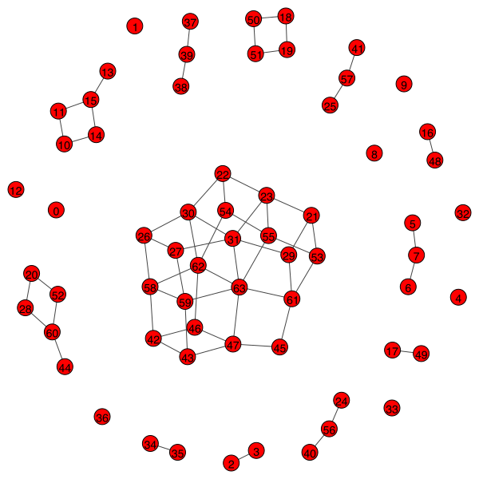
[168]:
{i: j for i, j in enumerate(product([1, 0], repeat=3))}
[168]:
{0: (1, 1, 1),
1: (1, 1, 0),
2: (1, 0, 1),
3: (1, 0, 0),
4: (0, 1, 1),
5: (0, 1, 0),
6: (0, 0, 1),
7: (0, 0, 0)}
[ ]:
PXP model#
Size of Hilbert space
OBC: \(F(n + 2)\), Fibonacci cube graph
PBC: \(F(n - 1) + F(n + 1)\), Lucas cube graph
n |
2 |
3 |
4 |
5 |
6 |
7 |
8 |
9 |
10 |
11 |
12 |
13 |
14 |
15 |
16 |
17 |
18 |
19 |
20 |
21 |
22 |
|---|---|---|---|---|---|---|---|---|---|---|---|---|---|---|---|---|---|---|---|---|---|
OBC |
3 |
5 |
8 |
13 |
21 |
34 |
55 |
89 |
144 |
233 |
377 |
610 |
987 |
1597 |
2584 |
4181 |
6765 |
10946 |
17711 |
28657 |
46368 |
PBC |
3 |
4 |
7 |
11 |
18 |
29 |
47 |
76 |
123 |
199 |
322 |
521 |
843 |
1364 |
2207 |
3571 |
5778 |
9349 |
15127 |
24476 |
39603 |
[26]:
model = PXPModel1D(4, periodic=False)
mat = model.hamiltonian.toarray()
assert ishermitian(mat)
evals, evecs = np.linalg.eigh(mat)
plt.matshow(mat)
plt.colorbar()
2024-06-12 14:05:41 [pxp_model_1d.py] INFO: CpSolverResponse summary:
status: OPTIMAL
objective: 0
best_bound: 0
integers: 0
booleans: 4
conflicts: 0
branches: 31
propagations: 21
integer_propagations: 0
restarts: 19
lp_iterations: 0
walltime: 0.001109
usertime: 0.001109
deterministic_time: 8.506e-06
gap_integral: 0
solution_fingerprint: 0x74d5541f5e724cde
2024-06-12 14:05:41 [pxp_model_1d.py] INFO: Found 8 optimal solutions.
[26]:
<matplotlib.colorbar.Colorbar at 0x1376dc1d0>
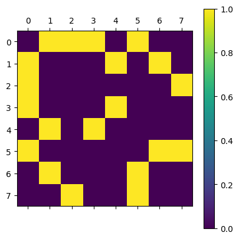
[173]:
if not model.periodic:
if model.n % 2 == 0:
assert np.count_nonzero(np.where(np.abs(evals) < 1e-10)[0]) == fibonacci(model.n // 2 + 1)
else:
assert np.count_nonzero(np.where(np.abs(evals) < 1e-10)[0]) == fibonacci(model.n // 2 - 1)
[220]:
df = model.basis.dataframe.copy(deep=True)
df.index = format_custom_index(df.index)
df
[220]:
| 0 | 1 | 2 | 3 | 4 | 5 | |
|---|---|---|---|---|---|---|
| (0) 0 | 0 | 0 | 0 | 0 | 0 | 0 |
| (1) 1 | 0 | 0 | 0 | 0 | 0 | 1 |
| (2) 2 | 0 | 0 | 0 | 0 | 1 | 0 |
| (3) 4 | 0 | 0 | 0 | 1 | 0 | 0 |
| (4) 5 | 0 | 0 | 0 | 1 | 0 | 1 |
| (5) 8 | 0 | 0 | 1 | 0 | 0 | 0 |
| (6) 9 | 0 | 0 | 1 | 0 | 0 | 1 |
| (7) 10 | 0 | 0 | 1 | 0 | 1 | 0 |
| (8) 16 | 0 | 1 | 0 | 0 | 0 | 0 |
| (9) 17 | 0 | 1 | 0 | 0 | 0 | 1 |
| (10) 18 | 0 | 1 | 0 | 0 | 1 | 0 |
| (11) 20 | 0 | 1 | 0 | 1 | 0 | 0 |
| (12) 21 | 0 | 1 | 0 | 1 | 0 | 1 |
| (13) 32 | 1 | 0 | 0 | 0 | 0 | 0 |
| (14) 33 | 1 | 0 | 0 | 0 | 0 | 1 |
| (15) 34 | 1 | 0 | 0 | 0 | 1 | 0 |
| (16) 36 | 1 | 0 | 0 | 1 | 0 | 0 |
| (17) 37 | 1 | 0 | 0 | 1 | 0 | 1 |
| (18) 40 | 1 | 0 | 1 | 0 | 0 | 0 |
| (19) 41 | 1 | 0 | 1 | 0 | 0 | 1 |
| (20) 42 | 1 | 0 | 1 | 0 | 1 | 0 |
[19]:
plt.plot(evals, linestyle="--", marker=".")
plt.grid()
pd.DataFrame(evals)
[19]:
| 0 | |
|---|---|
| 0 | -3.899993e+00 |
| 1 | -2.733840e+00 |
| 2 | -2.349811e+00 |
| 3 | -1.961900e+00 |
| 4 | -1.414214e+00 |
| 5 | -1.296249e+00 |
| 6 | -1.231513e+00 |
| 7 | -7.669266e-01 |
| 8 | -4.005531e-01 |
| 9 | -5.786068e-16 |
| 10 | -3.068674e-16 |
| 11 | -2.125925e-16 |
| 12 | 4.005531e-01 |
| 13 | 7.669266e-01 |
| 14 | 1.231513e+00 |
| 15 | 1.296249e+00 |
| 16 | 1.414214e+00 |
| 17 | 1.961900e+00 |
| 18 | 2.349811e+00 |
| 19 | 2.733840e+00 |
| 20 | 3.899993e+00 |
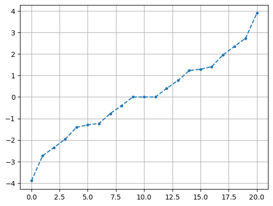
[57]:
plt.matshow(evecs)
plt.colorbar()
[57]:
array([[ 5.21608974e-01, -4.59081550e-17, -2.47502346e-01,
-7.48594363e-02, -5.72476548e-01, 2.47502346e-01,
2.94141727e-17, 5.21608974e-01],
[-4.05621093e-01, 3.53553391e-01, -2.92355142e-01,
4.95779234e-01, -6.48301735e-02, -2.92355142e-01,
3.53553391e-01, 4.05621093e-01],
[-2.92355142e-01, -3.53553391e-01, 4.05621093e-01,
4.95779234e-01, -6.48301735e-02, 4.05621093e-01,
-3.53553391e-01, 2.92355142e-01],
[-2.92355142e-01, 3.53553391e-01, 4.05621093e-01,
-4.95779234e-01, 6.48301735e-02, 4.05621093e-01,
3.53553391e-01, 2.92355142e-01],
[ 2.60804487e-01, -5.00000000e-01, -1.23751173e-01,
7.48594363e-02, 5.72476548e-01, 1.23751173e-01,
5.00000000e-01, 2.60804487e-01],
[-4.05621093e-01, -3.53553391e-01, -2.92355142e-01,
-4.95779234e-01, 6.48301735e-02, -2.92355142e-01,
-3.53553391e-01, 4.05621093e-01],
[ 3.03127229e-01, 1.66533454e-16, 6.38837916e-01,
-1.66533454e-16, 2.22044605e-16, -6.38837916e-01,
5.55111512e-17, 3.03127229e-01],
[ 2.60804487e-01, 5.00000000e-01, -1.23751173e-01,
7.48594363e-02, 5.72476548e-01, 1.23751173e-01,
-5.00000000e-01, 2.60804487e-01]])
[206]:
plt.scatter(evals, model.z2_overlap(evecs, start_with=0), marker=".")
plt.grid()
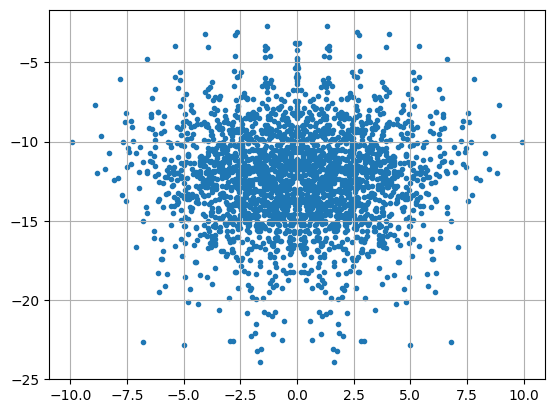
[205]:
zero_state = np.zeros(model.basis.n_states)
zero_state[0] = 1
overlap = np.log(np.abs(zero_state[None, :] @ evecs) ** 2)
plt.scatter(evals, overlap, marker=".")
plt.grid()
/var/folders/9z/xvqzg2q52gd8hxzhj2vgzrpm0000gn/T/ipykernel_30840/3069772978.py:3: RuntimeWarning: divide by zero encountered in log
overlap = np.log(np.abs(zero_state[None, :] @ evecs) ** 2)
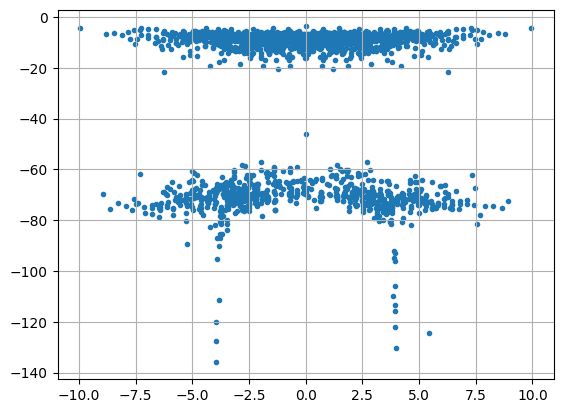
[207]:
entropies = [model.entropy(evecs[:, i], model.n // 2 - 1) for i in range(evecs.shape[1])]
plt.scatter(evals, entropies, marker=".")
plt.grid()
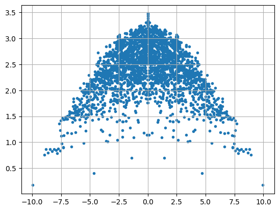
[27]:
g = nx.from_numpy_array(mat)
ig = igraph.Graph.from_networkx(g)
ntg = pynauty.Graph(
g.number_of_nodes(),
adjacency_dict=nx.to_dict_of_lists(g),
# vertex_coloring=group_indices_by_value(dict(g.degree)),
)
aut_gp = pynauty.autgrp(ntg)[0]
perm_gp = PermutationGroup([Permutation(p) for p in aut_gp])
print(perm_gp.orbits())
[{0}, {1, 5}, {2, 3}, {4, 7}, {6}]
[1]
[28]:
g = nx.from_numpy_array(mat)
assert nx.is_bipartite(g)
highlight = [
# np.where(evecs[:, 10] > 1e-5)[0],
# np.where(evecs[:, 10] <- 1e-5)[0],
# np.where(np.abs(state) > 1e-5)[0],
# [1, 2, 3, 4, 5, 7, 8, 10, 11, 12, 13, 14, 18, 20]
]
highlight = perm_gp.orbits()
# highlight = list(nx.bipartite.sets(g))
# highlight_color = ["whitesmoke", "dimgray"]
# highlight_color = ["tomato", "royalblue"]
highlight_color = list(mcolors.TABLEAU_COLORS.values())
cmap = plt.get_cmap('Set2')
highlight_color += [mcolors.to_hex(cmap(i)) for i in range(cmap.N)]
cmap = plt.get_cmap('Set3')
highlight_color += [mcolors.to_hex(cmap(i)) for i in range(cmap.N)]
highlight_color *= 3
ig = setup_igraph(g, highlight, highlight_color)
# rm = np.array([6, 9, 15, 16, 17, 19])
# mask = ~np.isin(np.arange(ig.vcount()), rm)
# sub_ig = ig.induced_subgraph(np.where(np.abs(evecs[:, 13]) > 1e-5)[0])
igraph.plot(
ig,
# layout=ig.layout_kamada_kawai(),
# layout=ig.layout_mds(),
vertex_size=16,
# edge_width=0.4,
# edge_color="darkgray",
vertex_label_size=10,
)
[28]:
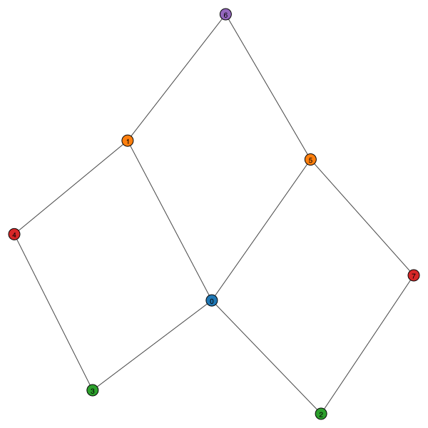
[32]:
ig = setup_igraph(nx.from_numpy_array(b))
igraph.plot(
ig,
# layout=ig.layout_kamada_kawai(),
vertex_size=16,
edge_width=0.4,
# edge_color="darkgray",
vertex_label_size=10
)
[32]:
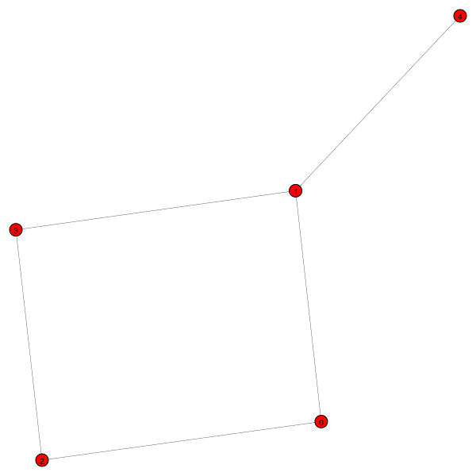
[22]:
sub_components = list(g.subgraph(c) for c in nx.connected_components(g))
for c in sub_components:
cmat = nx.to_numpy_array(c)
print(cmat.shape[0] - np.linalg.matrix_rank(cmat))
5
[127]:
two_steps_mat = np.linalg.matrix_power(mat, 2)
sort_idx = np.argsort(np.diag(two_steps_mat))
plt.plot(np.diag(two_steps_mat[sort_idx, :][:, sort_idx]), linestyle="--", marker="o")
plt.show()
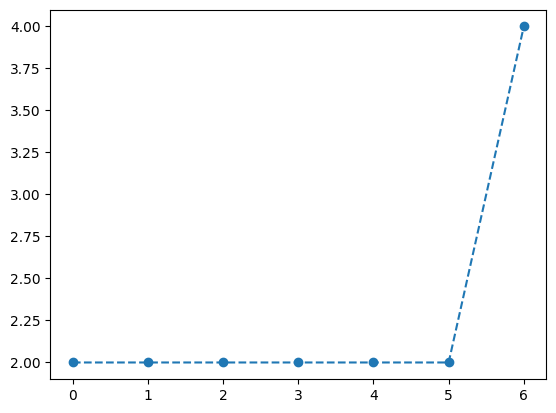
[128]:
g = nx.from_numpy_array(two_steps_mat)
# highlight = [
# ]
# highlight_color = [
# "aqua",
# "deepskyblue",
# "yellowgreen",
# "tomato",
# "royalblue"
# ]
ig = setup_igraph(g, highlight, highlight_color)
igraph.plot(
ig,
layout=ig.layout_kamada_kawai(),
vertex_size=12,
edge_width=0.4,
# edge_color="darkgray",
vertex_label_size=8
)
[128]:
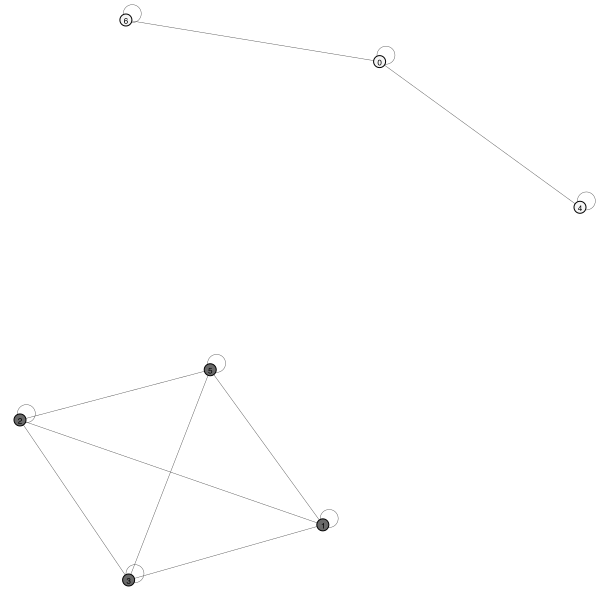
[129]:
sub_components = list(g.subgraph(c) for c in nx.connected_components(g))
for c in sub_components:
# print(nx.is_bipartite(c))
cmat = nx.to_numpy_array(c)
print(cmat.shape[0], cmat.shape[0] - np.linalg.matrix_rank(cmat))
3 1
4 2
[120]:
sub_ig = ig.subgraph(sub_components[1].nodes)
igraph.plot(
sub_ig,
layout=sub_ig.layout_kamada_kawai(),
vertex_size=12,
edge_width=0.4,
# edge_color="darkgray",
vertex_label_size=8
)
[120]:
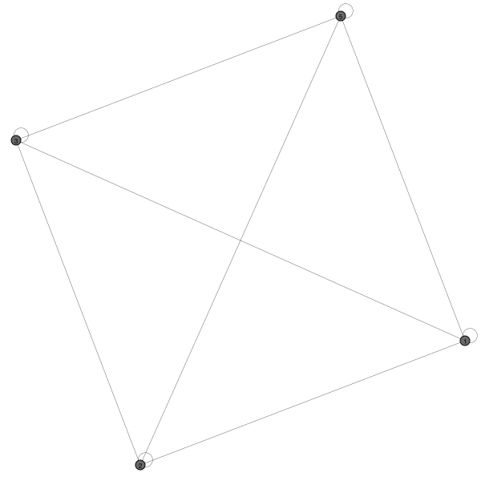
[65]:
evals, evecs = np.linalg.eigh(nx.to_numpy_array(sub_components[0]))
evals
[65]:
array([7.21610238e-16, 8.37722340e-01, 2.00000000e+00, 7.16227766e+00])
[67]:
evecs.T
[67]:
array([[-5.77350269e-01, 5.77350269e-01, -5.55111512e-17,
5.77350269e-01],
[ 3.50021175e-01, 1.75010587e-01, -9.03453245e-01,
1.75010587e-01],
[ 2.47397131e-16, -7.07106781e-01, -5.55111512e-17,
7.07106781e-01],
[-7.37666486e-01, -3.68833243e-01, -4.28686638e-01,
-3.68833243e-01]])
[68]:
state = np.zeros(model.basis.n_states)
state[np.array(sub_components[1].nodes)] = evecs[:, 0]
pd.DataFrame(state[:, None])
[68]:
| 0 | |
|---|---|
| 0 | 0.000000e+00 |
| 1 | -2.672612e-01 |
| 2 | 2.672612e-01 |
| 3 | -2.672612e-01 |
| 4 | 0.000000e+00 |
| 5 | 2.672612e-01 |
| 6 | 0.000000e+00 |
| 7 | 0.000000e+00 |
| 8 | -2.672612e-01 |
| 9 | 0.000000e+00 |
| 10 | 0.000000e+00 |
| 11 | 0.000000e+00 |
| 12 | 5.345225e-01 |
| 13 | 2.672612e-01 |
| 14 | 0.000000e+00 |
| 15 | 0.000000e+00 |
| 16 | 0.000000e+00 |
| 17 | 4.718448e-16 |
| 18 | 0.000000e+00 |
| 19 | 1.665335e-16 |
| 20 | -5.345225e-01 |
[20]:
model.z2_overlap(state[:, None], start_with=0)
/Users/tandaolin/projects/qlinks/qlinks/model/pxp_model_1d.py:173: RuntimeWarning: divide by zero encountered in log
return np.log(np.abs(z2_basis[None, :] @ evecs) ** 2)
[20]:
array([[-inf]])
[21]:
model.entropy(state, 2)
[21]:
1.2739986834917572
[69]:
sub_components[1].nodes
[69]:
NodeView((1, 2, 3, 5, 8, 12, 13, 17, 19, 20))
[64]:
highlight = [
np.where(np.abs(evecs[:, 0]) > 1e-12)[0]
]
highlight_color = [
"aqua",
# "deepskyblue",
# "yellowgreen",
# "tomato",
# "royalblue"
]
g = nx.from_numpy_array(nx.to_numpy_array(sub_components[1]))
ig = setup_igraph(g, highlight, highlight_color)
igraph.plot(
ig,
layout=ig.layout_kamada_kawai(),
# layout=ig.layout_mds(),
vertex_size=12,
edge_width=0.4,
# edge_color="darkgray",
vertex_label_size=8
)
[64]:
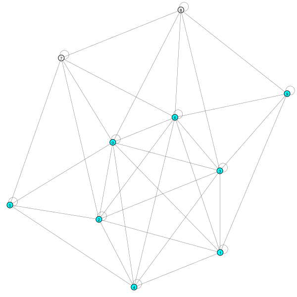
[ ]:
Ising model#
[71]:
mat = ising_model(8, 1).toarray()
assert ishermitian(mat)
plt.matshow(mat)
plt.colorbar()
[71]:
<matplotlib.colorbar.Colorbar at 0x12ef0fcd0>
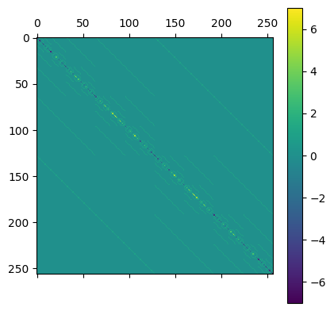
[77]:
g = nx.from_numpy_array(mat)
ig = igraph.Graph.from_networkx(g)
ig.vs["label"] = [str(i) for i in range(ig.vcount())]
igraph.plot(
ig,
layout=ig.layout_kamada_kawai(),
vertex_size=14,
vertex_color="orange",
# edge_width=0.4,
# edge_color="darkgray",
vertex_label_size=8,
)
[77]:
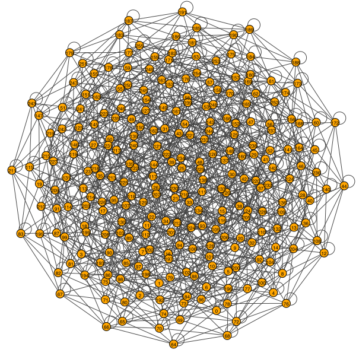
[14]:
[15]:
import numpy as np
from scipy.linalg import eig
n = 6
A = np.random.random((n, n))
A = (A + A.T) / 2
B = np.random.random((n, n))
B = (B + B.T) / 2
[16]:
evals, left_evecs, right_evecs = eig((B @ B @ A + B), b=B @ B, left=True, right=True)
np.real_if_close(evals)
[16]:
array([ 14.26246953, -10.8217393 , -2.56972014, 0.94314784,
2.34084653, 3.14140687])
[17]:
B.T @ B.T @ left_evecs
[17]:
array([[-7.32781367e-04, 1.64044896e-03, -3.20913629e-02,
1.03019941e-01, 1.28521959e-01, -5.09032601e-03],
[-1.18373483e-03, -1.00033890e-04, 1.14220459e-01,
-5.97266074e-02, 5.71648887e-02, -4.11829572e-02],
[-1.85610496e-03, 3.28852717e-03, -5.30153850e-02,
-3.71457391e-02, -3.31280130e-02, -8.87849725e-02],
[ 2.10529885e-03, -7.45939513e-04, 3.69357452e-02,
1.24520788e-01, -3.88663048e-02, -7.05414779e-02],
[ 3.16076899e-03, -8.59551106e-04, -3.78651754e-02,
-9.98151261e-02, 6.29557642e-02, -3.75670274e-02],
[-1.64747350e-03, -6.96508715e-03, -3.35124984e-02,
6.56561685e-03, 1.02010402e-02, -3.03358828e-02]])
[18]:
right_evecs
[18]:
array([[-0.15441446, 0.20614906, -0.22247128, 0.50833447, 0.79008179,
-0.03914204],
[-0.24944107, -0.01257088, 0.79182587, -0.29471084, 0.35141806,
-0.31667614],
[-0.39112545, 0.41325685, -0.3675257 , -0.18328937, -0.20365267,
-0.68271159],
[ 0.44363652, -0.09373942, 0.25605464, 0.61442676, -0.23892851,
-0.54242834],
[ 0.66604918, -0.10801656, -0.26249786, -0.49252085, 0.38701715,
-0.28887147],
[-0.34716184, -0.87527633, -0.23232321, 0.03239693, 0.06271034,
-0.23326762]])
[19]:
np.real_if_close(left_evecs.T @ B @ B @ right_evecs)
[19]:
array([[ 4.74554898e-03, -9.76309034e-18, 6.98786880e-17,
-2.31805091e-16, 9.15497150e-16, -1.04099135e-15],
[ 1.05562326e-17, 7.95758653e-03, -1.08322339e-16,
1.32749476e-16, 5.60259852e-17, -2.04373930e-16],
[-6.50152900e-17, 1.55408876e-17, 1.44249465e-01,
-1.72445906e-16, 2.65667241e-16, -3.60350296e-16],
[-5.31575115e-17, 2.46498625e-17, -2.24901177e-16,
2.02661726e-01, -4.80477574e-16, 5.43488558e-16],
[ 3.04294677e-16, 7.89100354e-17, -3.99095740e-16,
5.28713423e-16, 1.62669182e-01, -7.27624554e-16],
[ 1.70718129e-17, 1.06921212e-16, -2.61843800e-16,
4.97130610e-16, -1.67560150e-16, 1.30047553e-01]])
[20]:
evals, left_evecs, right_evecs = eig(A + np.linalg.pinv(B), left=True, right=True)
np.real_if_close(evals)
[20]:
array([ 14.26246953, -10.8217393 , -2.56972014, 0.94314784,
2.34084653, 3.14140687])
[21]:
right_evecs
[21]:
array([[ 0.15441446, 0.20614906, -0.22247128, -0.50833447, -0.79008179,
0.03914204],
[ 0.24944107, -0.01257088, 0.79182587, 0.29471084, -0.35141806,
0.31667614],
[ 0.39112545, 0.41325685, -0.3675257 , 0.18328937, 0.20365267,
0.68271159],
[-0.44363652, -0.09373942, 0.25605464, -0.61442676, 0.23892851,
0.54242834],
[-0.66604918, -0.10801656, -0.26249786, 0.49252085, -0.38701715,
0.28887147],
[ 0.34716184, -0.87527633, -0.23232321, -0.03239693, -0.06271034,
0.23326762]])
[22]:
left_evecs
[22]:
array([[ 0.15441446, 0.20614906, -0.22247128, -0.50833447, -0.79008179,
0.03914204],
[ 0.24944107, -0.01257088, 0.79182587, 0.29471084, -0.35141806,
0.31667614],
[ 0.39112545, 0.41325685, -0.3675257 , 0.18328937, 0.20365267,
0.68271159],
[-0.44363652, -0.09373942, 0.25605464, -0.61442676, 0.23892851,
0.54242834],
[-0.66604918, -0.10801656, -0.26249786, 0.49252085, -0.38701715,
0.28887147],
[ 0.34716184, -0.87527633, -0.23232321, -0.03239693, -0.06271034,
0.23326762]])
[22]:
MPS exact scars in PXP#
[ ]:
import quimb.tensor as qtn
b_mat = np.array(
[
[[1, 0], [0, 0], [0, 0]],
[[0, np.sqrt(2)], [1, 0], [0, np.sqrt(2)]]
]
)
c_mat = np.array(
[
[[0, np.sqrt(2)], [-1, 0]],
[[1, 0], [0, 0]],
[[0, -np.sqrt(2)], [0, 0]]
]
)
vec1 = np.array([1, 1])
vec2 = np.array([1, -1])
def obc_mps(n, idx_a, idx_b):
mps = [b_mat, c_mat] * (n // 2)
left_vec = {
0: vec1,
1: vec2
}[idx_a]
right_vec = {
0: vec1,
1: vec2
}[idx_b]
mps[0] = np.einsum("i,ijk->jk", left_vec, mps[0])
mps[-1] = np.einsum("ijk,j->ik", mps[-1], right_vec)
return qtn.MatrixProductState(mps)
mps = obc_mps(6, 0, 1).to_dense()
# mps /= np.linalg.norm(mps)
idx = model.basis.index.astype(int)
mps.T[:, idx]
[77]:
{i: j for i, j in enumerate(product([0, 1], repeat=4))}
[77]:
{0: (0, 0, 0, 0),
1: (0, 0, 0, 1),
2: (0, 0, 1, 0),
3: (0, 0, 1, 1),
4: (0, 1, 0, 0),
5: (0, 1, 0, 1),
6: (0, 1, 1, 0),
7: (0, 1, 1, 1),
8: (1, 0, 0, 0),
9: (1, 0, 0, 1),
10: (1, 0, 1, 0),
11: (1, 0, 1, 1),
12: (1, 1, 0, 0),
13: (1, 1, 0, 1),
14: (1, 1, 1, 0),
15: (1, 1, 1, 1)}
[ ]: